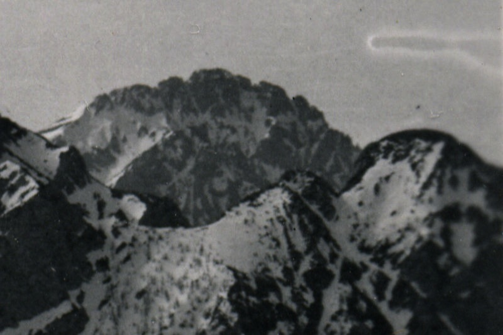

"Il paesaggio culturale alpino su Wikipedia"
OSMit2014
Progetto Interreg Italia-Svizzera
- Partenariato italiano:
- Politecnico di Milano - DAStU
- Comunità Montana Valsassina Valvarrone, Val d’Esino e Riviera
- Comune di Esino Lario
- Partenariato svizzero:
- Scuola Universitaria Professionale della Svizzera Italiana
Adesioni al progetto
- Wikimedia Italia (IT)
- Wikimedia Svizzera (CH)
- Associazione Amici Museo delle Grigne Onlus (IT);
- Fondazione Valle Bavona (CH)
- Museo Cantonale di storia naturale (CH)
Paesaggio culturale alpino
Matera!

Paesaggio culturale
alpino
Comprensorio 28 comuni
Territorio ricco di siti archeologi, beni monumentali, artistici, ambientali e sentieri storico-tematici
Due premesse:
Patrimonio &
Partecipazione
Elemento centrale per definire ed individuare i paesaggi in relazione alla percezione delle popolazioni, per analizzarne le caratteristiche e leggerne le trasformazioni e per valutarne e perseguirne la qualità tenendo conto dei valori attribuiti dai soggetti interessati.
Convenzione Europea del Paesaggio (CEP)
Le Pratiche di Consultazione sono tra i criteri ispiratori della legislazione lombarda in tema di governo del territorio, quali elementi fondanti la pianificazione ad ogni livello.
(L.R. 12/2005 art.1)
Domanda di partecipazione.
Dati aperti come risposta strumentale per la creazione di contenuti accessibili, incrementabili e di valore.
OSM & Wikipedia come fonti e contenitori di informazioni
Azioni di progetto:
Standing on the shoulders..
Web-App Architecture
Grazie!
Domande?
Michele Ferretti
mailto: mic.ferretti@gmail.com
twitter: twitter.com/miccferr
github.com/miccferr